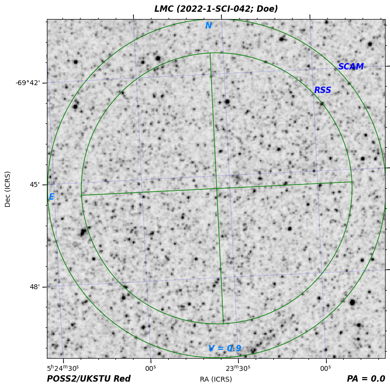
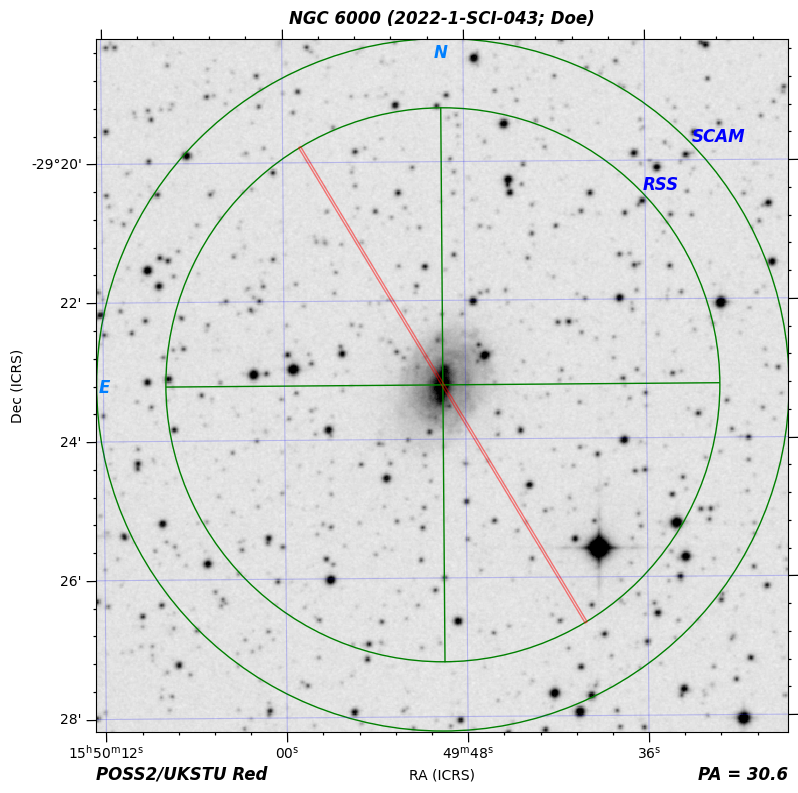

Quickstart
Contents
Quickstart#
imephu is the word for map in isiXhosa, one of the 11 official languages of South Africa. The package allows you to easily create finder charts, primarily for the Southern African Large Telescope (SALT).
Installation#
You can install imephu with pip:
pip install imephu
Creating off-the-shelf finder charts#
imephu ships with a command line interface with command imephu. Let us run it to find out about its options:
imephu --help
We’ll get some helpful information:
Usage: imephu [OPTIONS]
A tool for creating finder charts.
Options:
-c, --config PATH Configuration details for the finder chart(s).
[required]
-o, --out PATH Output file.
--version Show the version and exit.
--install-completion Install completion for the current shell.
--show-completion Show completion for the current shell, to copy it or
customize the installation.
--help Show this message and exit.
We can see that we need at least a configuration file. This must be a YAML file containing all the details necessary for creating the finder chart, such as the telescope and the instrument configuration. Let’s start with a SALT setup using the Salticam imaging camera.
telescope: SALT
proposal-code: 2022-1-SCI-042
pi-family-name: Doe
position-angle: 0d
target:
name: LMC
ra: 05h 23m 34.5s
dec: −69d 45m 22s
magnitude-range:
bandpass: V
minimum: 0.9
maximum: 0.9
fits-source:
image-survey: POSS2/UKSTU Red
instrument:
salticam:
slot-mode: false
Save the file as salticam.yaml and then use it to create a finder chart:
imephu --config salticam.yaml --out salticam.pdf
We get the following finder chart.
Let’s also try to create an RSS finder chart for the following configuration.
telescope: SALT
proposal-code: 2022-1-SCI-043
pi-family-name: Doe
position-angle: 30.6d
target:
name: NGC 6000
ra: 15h 49m 49.5s
dec: −29° 23′ 13″
magnitude-range:
minimum: 11.18
maximum: 11.36
bandpass: V
fits-source:
image-survey: POSS2/UKSTU Red
instrument:
rss:
mode: "spectroscopy"
slit-height: 8 arcmin
slit-width: 2 arcsec
Save the configuration as rss-longslit.yaml and run the command for creating a finder chart from it:
imephu --config rss-longslit.yaml --out rss-longslit.png
While previously we created a pdf, we now get a png, which looks like this:
There may be cases where the standard FITS image obtained from one of the available image servers is not the best one to use. For example, you might want to use a zoomed in version. Let’s try this with our RSS finder chart! Here is a setup using a FITS image from file.
telescope: SALT
proposal-code: 2022-1-SCI-043
pi-family-name: Doe
position-angle: 30.6d
target:
name: NGC 6000
ra: 15h 49m 49.5s
dec: −29° 23′ 13″
magnitude-range:
minimum: 11.18
maximum: 11.36
bandpass: V
fits-source:
file: ./ngc6000-zoomed-in.fits
instrument:
rss:
mode: "spectroscopy"
slit-height: 8 arcmin
slit-width: 2 arcsec
The only difference to the previous configuration is that the fits-source now specifies a file rather than an image survey. The file path must be absolute or relative to the configuration file (not the present working directory).
Save the configuration file as rss-longslit-own-fits.yaml and make sure that you have a FITS file ngc6000-zoomed-in.fits in the same directory.
Note
You can download the FITS file here.
Finder charts for non-sidereal targets#
When creating finder charts for non-sidereal targets, you have to specify the asteroid’s identifier for the Horizons database, a start time, an end time and a stepsize between ephemerides instead of the right ascension, declination and magnitude range. The start and end time must be given as an ISO-8601 string with timezone offset.
Here is an example configuration for observing the asteroid Ubuntu with Salticam.
telescope: SALT
proposal-code: 2022-1-SCI-042
pi-family-name: Doe
position-angle: 0d
target:
name: Ubuntu
horizons-id: 2005 EW302
start-time: "2022-04-03T12:00:00+00"
end-time: "2022-04-06T12:00:00+00"
ephemeris-stepsize: 1 hour
fits-source:
image-survey: POSS2/UKSTU Red
instrument:
salticam:
slot-mode: false
Warning
As shown in the example, the values for the start and end date must be enclosed in double quotes. Otherwise you will get an error that the value is not of type ‘string’.
Save the configuration as salticam-non-sidereal.yaml and run imephu with this file.
imephu --config salticam-non-sidereal.yaml --out ubuntu.zip
If the path of the target does not fit onto a single finder chart, multiple finder charts are generated, and a zip file of all the charts is created. The name of the finder chart file within this zip file include the start and end of the time interval for which the chart is valid.
Whereas for sidereal finder charts the image type can be inferred from the extension of the chosen output file, this is not the case for non-sidereal targets. However, you can request a specific type (such as pdf or png) by using the --format option. For example:
imephu --config salticam-non-sidereal.yaml --out ubuntu.zip --format png
Matplotlib’s default format is used if no format is specified. This is usually PNG but can be changed by setting rcParams(“savefig.format”).
Writing the finder chart to stdout#
So far we have always used the --out option to save the generated file in a file. However, if you want to use imephu as part of a Unix pipeline, you can omit the option so that the file content is written to stdout instead. For example:
imephu --config salticam.yaml | less
Matplotlib’s default format is used. This is usually PNG but can be changed by setting rcParams(“savefig.format”). You can change this with the --format option.
imephu --config salticam.yaml --format pdf | less
You might wonder what happens if you use both the --out and the --format option. In this case, --format sets the image format, and the created file is named as defined by --out is used, irrespective of whether the file extension is consistent with the chosen image format. For example, you hence might end up with a pdf file called finder-chart.png.
Creating finder charts programmatically#
You can create finder charts programmatically, as explained on this page.